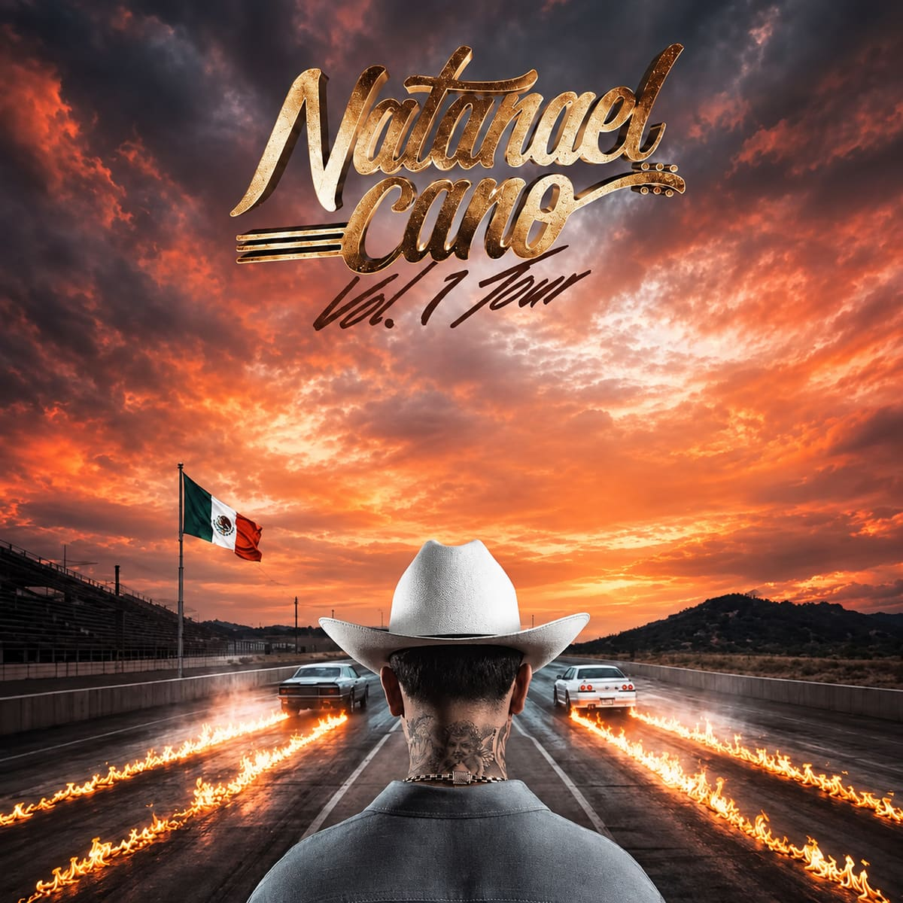

Sorteo en vivo · 13 sep, 8:00 PM hora de Reynosa (7:00 PM en Monterrey)
El premio depende de dónde vivas: si eres de Reynosa, Paquete PLUS: transporte ida y vuelta, traslados, hospedaje, boleto en Zona Tumbada y Kit Conecta. Si eres de fuera, boleto en Zona Tumbada + Kit Conecta.
Sorteo en vivo el domingo 13 de septiembre · 8:00 PM hora de Reynosa (7:00 PM en Monterrey). Ten tu WhatsApp a la mano: si sales, tienes 10 minutos para contestar.
Invitar a alguienEl premio depende de dónde vivas: si eres de Reynosa, Paquete PLUS: transporte ida y vuelta, traslados, hospedaje, boleto en Zona Tumbada y Kit Conecta. Si eres de fuera, boleto en Zona Tumbada + Kit Conecta.
Sorteo en vivo el domingo 13 de septiembre · 8:00 PM hora de Reynosa (7:00 PM en Monterrey). Síguenos para verlo.
Todavía quedan lugares para el 6 de agosto en Arena Monterrey. Escríbenos y te armamos tu paquete.
Apartar mi lugar